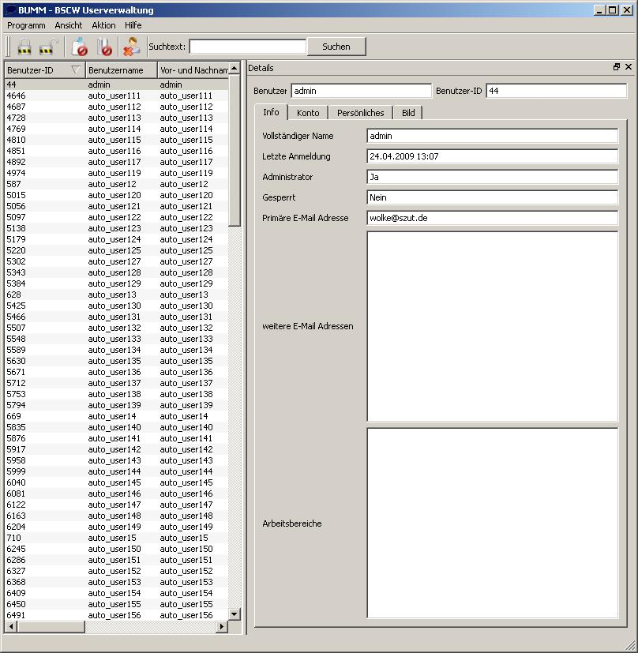

Die Oberfläche

Hier sehen sie ein neu geöffnetes Programm. Die Oberfläche ist geteilt in eine Liste aller Benutzer, einer Toolbar, in der sie schnell auf alle Aktionen zugreifen können und einem verscheibbaren Teil, der die Benutzerdetails anzeigt.